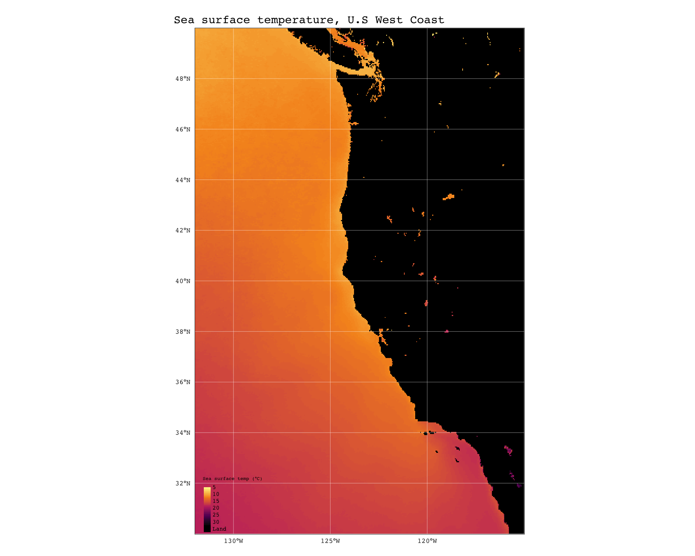
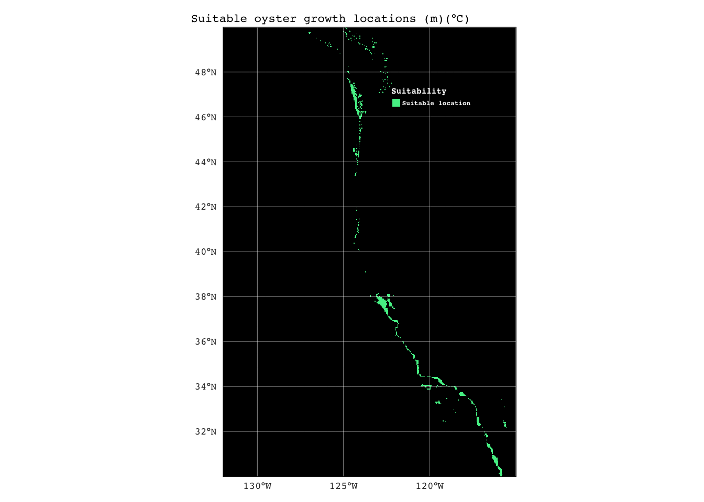

library(stars)
library(tidyverse)
library(tmap)
library(sf)
library(here)
library(raster)
library(terra)
library(FNN)Homework Assignment #4
Prioritizing potential aquaculture
Load data and libraries
sst_2008 <- read_stars(here("data","average_annual_sst_2008.tif"))
sst_2009 <- read_stars(here("data","average_annual_sst_2009.tif"))
sst_2010 <- read_stars(here("data","average_annual_sst_2010.tif"))
sst_2011 <- read_stars(here("data","average_annual_sst_2011.tif"))
sst_2012 <- read_stars(here("data","average_annual_sst_2012.tif"))
depth <- read_stars(here("data","depth.tif"))
ezz <- read_sf(here("data","wc_regions_clean.shp"), quiet = TRUE)Process data
# Check that CRS match
st_crs(sst_2008) == st_crs(sst_2009)[1] TRUEst_crs(sst_2008) == st_crs(sst_2010)[1] TRUEst_crs(sst_2008) == st_crs(sst_2011)[1] TRUEst_crs(sst_2008) == st_crs(sst_2012)[1] TRUEsst_stack <- c(sst_2008, sst_2009, sst_2010, sst_2011, sst_2012)
sst_stack <- st_redimension(sst_stack) # mean function was applied to layers separately until i used st_redimension
mean_sst <- st_apply(sst_stack, c(1,2), mean, na.rm = TRUE) # mean sst accross 2008-2012
mean_sst <- mean_sst - 273.15 # convert average sst from kelvin to celsiusmap1 <- tm_shape(mean_sst) +
tm_raster(palette = rev(hcl.colors(5,"YlGnBu")),
style = "pretty",
colorNA = "black",
title = "Sea surface temp (°C)",
) +
tm_graticules(lwd = 0.3,
col = "white") +
tm_layout(fontfamily = "courier",
main.title = "Sea surface temperature, U.S West Coast",
main.title.size = 1,
inner.margins = c(0.001, 0.001, 0.001, 0.001),
legend.position = c("left","BOTTOM"),
legend.text.size = 0.5,
legend.title.color = "black",
legend.text.color = "black",
legend.height = 5,
legend.title.size = 0.5)
map1
test<- read_stars(here("data","depth.tif"))
test[test > 0] <- NA
map2 <- tm_shape(test) +
tm_raster(palette = rev(hcl.colors(8,"Mako")),
style = "cont",
colorNA = "black",
title = "Sea surface temp (°C)",
) +
tm_graticules(lwd = 0.3,
col = "white") +
tm_layout(fontfamily = "courier",
main.title = "Sea surface temperature, U.S West Coast",
main.title.size = 1,
legend.position = c("left","BOTTOM"),
legend.text.size = 0.5,
legend.title.color = "black",
legend.text.color = "black",
legend.height = 5,
legend.title.size = 0.5)
map2# check that depth matches mean_sst crs and transform if not
if(st_crs(mean_sst) == st_crs(depth)) {
print("crs match!")
} else {
depth <- st_transform(depth, st_crs(mean_sst))
}# double-check after transformation
if(st_crs(mean_sst) == st_crs(depth)) {
print("crs match!")
} else {
print("crs don't match!")
}[1] "crs match!"# match extents and resample to mean_sst resolution using nearest neighbor ("near")
depth_resampled <- st_warp(depth,mean_sst, method = "near")
# stack to verify
depth_sst <- c(depth_resampled,mean_sst)
# stacked successfully Find suitable locations for oysters
# reclassify mean_sst
rcl_sst <- matrix(c(-Inf, 11, 0,
11, 30, 1,
30, Inf, 0),
ncol = 3, byrow = TRUE)
mean_sst <- rast(mean_sst)
reclassified_sst <- classify(mean_sst, rcl = rcl_sst)
# reclassify depth
rcl_depth <- matrix(c(-Inf, 0, 0,
0, 70, 1,
70, Inf, 0),
ncol = 3, byrow = TRUE)
depth_resampled <- rast(depth_resampled)
reclassified_depth <- classify(depth_resampled, rcl = rcl_depth)
suitable_locations <- reclassified_sst * reclassified_depthmap3 <- tm_shape(reclassified_sst) +
tm_raster(palette = c("indianred","skyblue"),
style = "cat",
colorNA = "black",
title = "Sea surface temp (°C)",
labels = c("Not suitable","Suitable location"),
textNA = "Land") +
tm_graticules(lwd = 0.3,
col = "white") +
tm_layout(fontfamily = "courier",
fontface = "bold",
main.title = "Suitable SST (°C) for oyster growth, U.S West Coast",
main.title.size = 0.7,
inner.margins = c(0.001, 0.001, 0.001, 0.001),
legend.position = c(0.57,0.8),
legend.frame = FALSE,
legend.text.size = 0.4,
legend.title.size = 0.6,
legend.title.color = "white",
legend.text.color = "white",
legend.text.fontface = "bold",
legend.title.fontface = "bold")
map3map4 <- tm_shape(reclassified_depth) +
tm_raster(palette = c("indianred","skyblue"),
style = "cat",
colorNA = "black",
title = "Suitability",
labels = c("Not suitable","Suitable location"),
textNA = "Land") +
tm_graticules(lwd = 0.3,
col = "white") +
tm_layout(fontfamily = "courier",
main.title = "Suitable depth(m) for oyster growth, U.S West Coast",
main.title.size = 0.7,
inner.margins = c(0.001, 0.001, 0.001, 0.001),
legend.position = c(0.57,0.8),
legend.frame = FALSE,
legend.text.size = 0.4,
legend.title.size = 0.6,
legend.title.color = "white",
legend.text.color = "white",
legend.text.fontface = "bold",
legend.title.fontface = "bold")
map4map5 <- tm_shape(suitable_locations) +
tm_raster(palette = c("indianred","skyblue"),
style = "cat",
colorNA = "black",
title = "Suitability",
labels = c("Not suitable","Suitable location"),
textNA = "Land") +
tm_graticules(lwd = 0.3,
col = "white") +
tm_layout(fontfamily = "courier",
main.title = "Suitable oyster growth locations (m)(°C)",
main.title.size = 0.7,
inner.margins = c(0.001, 0.001, 0.001, 0.001),
legend.position = c(0.57,0.8),
legend.frame = FALSE,
legend.text.size = 0.4,
legend.title.size = 0.6,
legend.title.color = "white",
legend.text.color = "white",
legend.text.fontface = "bold",
legend.title.fontface = "bold")
map5